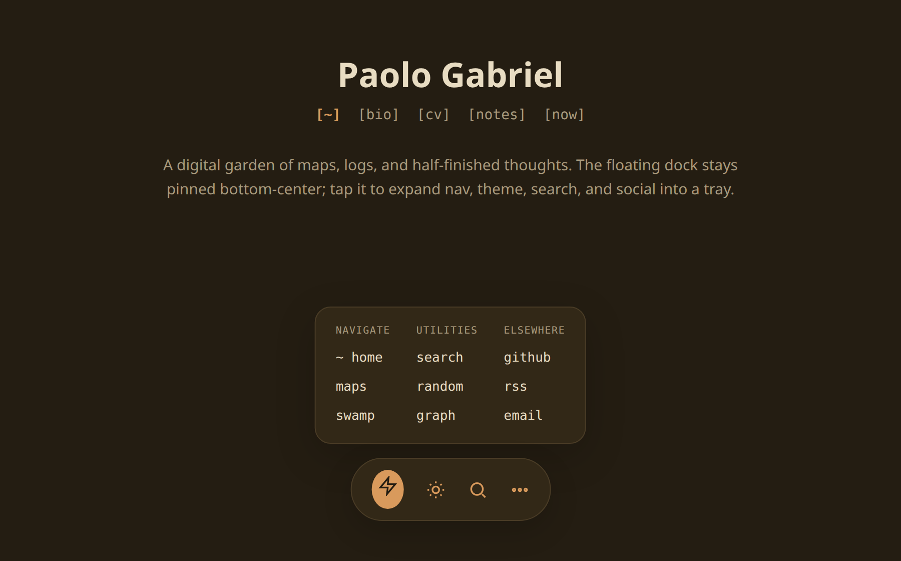
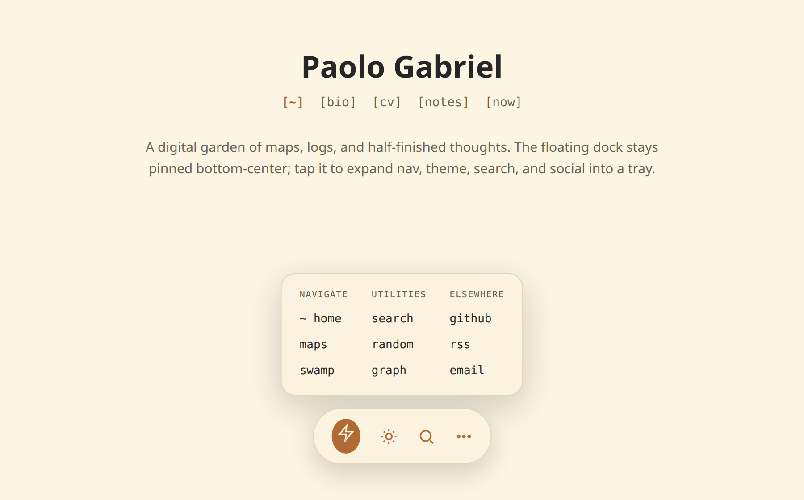

dg-floating-tray
A bottom floating dock + expandable tray for your Digital Garden.


Adds a fixed bottom floating control to an Obsidian Digital Garden (Eleventy) site: an always-visible primary dock (random page, light/dark toggle, search, a ••• button) that expands into a tray of secondary links - maps, logs, RSS, social, a QR. Keyboard- and screen-reader-accessible, theme-aware, and responsive (a centered pill on desktop, a full-width rail on phones).
Two ways to install
Hand it to your AI agent (no coding), or copy the two files yourself.
Option A - let your agent do it
Copy the skill folder into your agent's skills directory, then ask it in your site's repo:
git clone https://github.com/palol/skills-zoo.git
cp -r skills-zoo/skills/dg-floating-tray ~/.claude/skills/(or ~/.agents/skills/)
Use the dg-floating-tray skill to add a floating dock + tray to this Digital Garden site. Copy the component into the user footer components folder, append the styles to my user stylesheet, then ask me which links I want. Don't touch plugin core or layout files.
It installs the two files, pauses to ask for your links, builds, and walks you through the checks. Afterwards you change things conversationally - "make the icons bigger", "add a Guestbook link", "less round corners".
Option B - copy-paste
Two files, that's the whole thing:
- Component →
src/site/_includes/components/user/common/footer/zzz-floating-dock.njk
Thezzz-prefix matters: DG auto-discovers footer partials and sorts alphabetically, so it renders last - no layout edit. - Styles → append to
src/site/styles/custom-style.scss.
Colors come from DG theme tokens, so light/dark Just Works.
Then npm run build (or the dev server) and look at the bottom of the page.
Grab the raw files: zzz-floating-dock.njk · floating-tray.scss
Tuning it
All the tweakable numbers live in one block at the top of the SCSS - edit these, everything else derives from them:
:root {
--dg-ft-item-size: 48px; /* icon-button size */
--dg-ft-gap: 6px; /* space between tray items */
--dg-ft-icon-size: 24px; /* icon glyph size */
--dg-ft-caption-size: 0.62rem;
--dg-ft-bottom: 1vmax; /* distance from bottom edge */
--dg-ft-pill-radius: 999px; /* dock roundness (lower = squarer) */
--dg-ft-tray-radius: 16px;
/* …mobile variants + grid caps… */
}Rows and columns? You don't set them directly - the JS derives the column count from how many items you add, clamped 2–6 on desktop (4 on mobile, 3 on narrow phones); rows follow. Add links, the grid grows. Colors aren't knobs - override your DG theme tokens and the tray follows.
Accessibility
- Every item has an
aria-label+title; icons arearia-hidden. - The ••• toggle exposes
aria-expanded+aria-controls. role="button"spans gettabindex="0"and respond to Enter/Space, not just click.- Visible focus ring via
:focus-visible; respectsprefers-reduced-motion. - On mobile, layout reserves bottom padding so content never hides behind the dock, and honors safe-area insets.
What's in the box
- SKILL.md - trigger description + step-by-step instructions
- assets/zzz-floating-dock.njk - drop-in component
- assets/floating-tray.scss - drop-in styles (tuning knobs on top)
- references/component.md - annotated markup + scripts
- references/styles.md - annotated SCSS
- references/tuning.md - every adjustable knob
- references/verify.md - post-build QA checklist
Prerequisites
- Repo uses the DG plugin with Eleventy; site source under
src/site/. - User-component autoloading via
src/site/_data/dynamics.js(globscomponents/user/common/<slot>/*.njk, iterates thefooterslot). - A compiled user stylesheet - typically
src/site/styles/custom-style.scss. - DG theme tokens present:
--background-secondary,--text-muted,--text-accent, etc.
Not for Quartz, Astro, or non-DG sites - the auto-include mechanism and theme tokens are DG-specific.